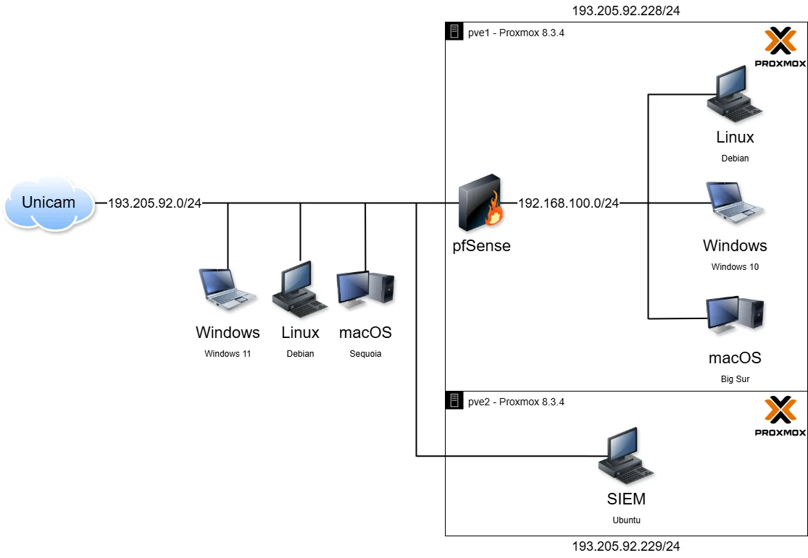
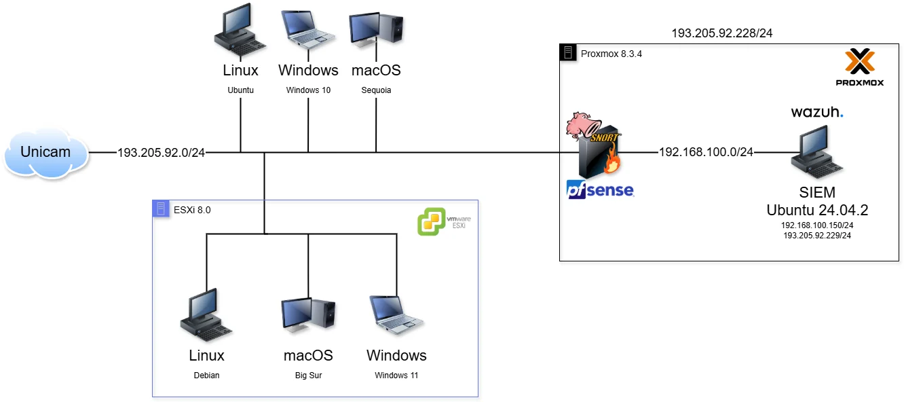
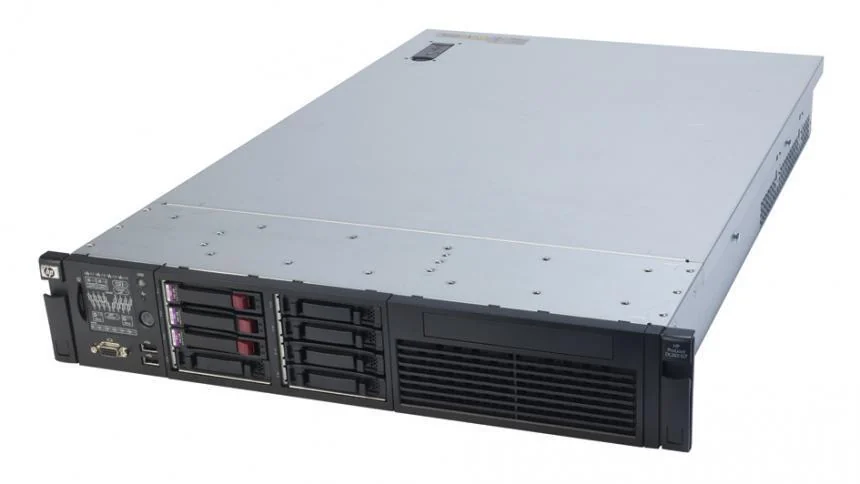
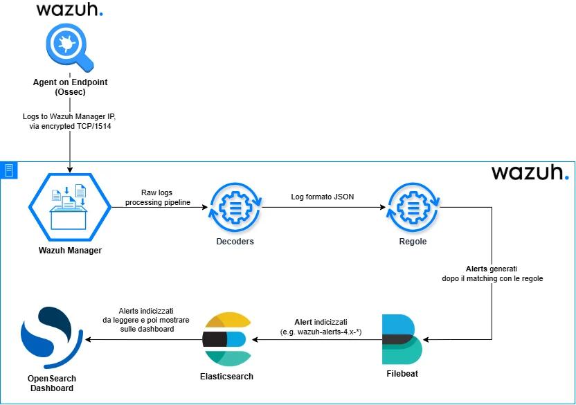
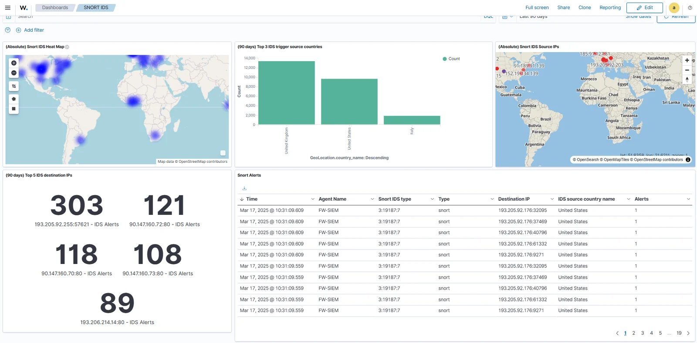

Tesi triennale · Security Operations
Security Operations Centre per PMI
Un SOC da laboratorio, attento ai costi e alle risorse, che integra strumenti di sicurezza di rete, virtualizzazione e decodificatori di log personalizzati.
Panoramica
Le piccole organizzazioni potrebbero non avere budget o personale per adottare una piattaforma commerciale di Security Operations su larga scala. Nella mia tesi ho studiato come un laboratorio accessibile potesse raccogliere, interpretare e presentare eventi di sicurezza combinando strumenti open source e hardware già disponibile.
Il sistema integra Wazuh, pfSense, Snort, Proxmox ed ESXi su un server HP ProLiant. Ho progettato decodificatori personalizzati per i log di Kea-DHCP4 e del Captive Portal di pfSense.
Il mio contributo
- Ho progettato la topologia di rete e virtualizzazione dell’ambiente SOC.
- Ho integrato Wazuh, pfSense e Snort con Proxmox e VMware ESXi.
- Ho scritto decodificatori Wazuh personalizzati per i log di Kea-DHCP4 e del Captive Portal di pfSense.
- Ho verificato l’ingestione degli avvisi con un test EICAR controllato e una consultazione di VirusTotal.
Come funziona
Gli endpoint e i servizi di rete generano eventi. Wazuh raccoglie ed elabora i log, mentre i decodificatori personalizzati estraggono i campi dai formati DHCP e Captive Portal.
Snort e pfSense forniscono i componenti di sicurezza di rete, mentre il laboratorio virtualizzato ospita i servizi di supporto. La topologia finale collega le fonti dati ai livelli di monitoraggio e dashboard.
Decisioni chiave
Riutilizzare l’hardware disponibile
Scelta: Basare il laboratorio su un server HP ProLiant e virtualizzare i servizi.
Motivazione: Riutilizzare l’hardware ha contenuto a circa 150 € il costo aggiuntivo, consentendo comunque di eseguire più componenti nello stesso ambiente.
Compromesso: Concentrare i carichi su un solo host non offre la resilienza attesa da un SOC di produzione.
Decodificare i log effettivamente prodotti dagli strumenti
Scelta: Aggiungere decodificatori personalizzati per Kea-DHCP4 e per il Captive Portal di pfSense.
Motivazione: Per generare avvisi utili, i formati specifici dei log devono essere convertiti in campi comprensibili alla piattaforma di monitoraggio.
Compromesso: I decodificatori personalizzati vanno aggiornati quando cambiano i formati dei log e verificati su campioni reali.
Usare un artefatto di test sicuro
Scelta: Usare il file di test EICAR e VirusTotal per verificare in modo controllato la pipeline degli eventi.
Motivazione: Un evento di test noto ha permesso di esercitare l’ingestione e la gestione degli avvisi senza presentare l’esercitazione come un attacco reale.
Compromesso: Il test verifica solo un percorso circoscritto della pipeline, non la capacità del SOC di rilevare ogni minaccia.
Risultati
La tesi ha prodotto un progetto di laboratorio funzionante e ha dimostrato l’ingestione dei log e la presentazione degli avvisi, compresa una verifica controllata con EICAR e VirusTotal.
Il costo hardware stimato è stato di circa 150 €, grazie al riutilizzo del server HP ProLiant.
Limiti e sviluppi futuri
Il laboratorio non includeva funzionalità SOAR e la quota gratuita dell’API VirusTotal limitava le verifiche ripetute. La presenza di un solo host fisico limita inoltre disponibilità e scalabilità.
Come passo successivo, aggiungerei procedure documentate di backup e ripristino, misurerei l’uso delle risorse sotto carico e definirei un flusso di risposta prima di ampliare l’ambiente.
Immagini del progetto
Seleziona un’immagine per ingrandirla.










Strumenti e metodi
I diagrammi di rete e le schermate del sistema provengono dal materiale della mia tesi triennale. La verifica descritta è stata un test EICAR / VirusTotal.